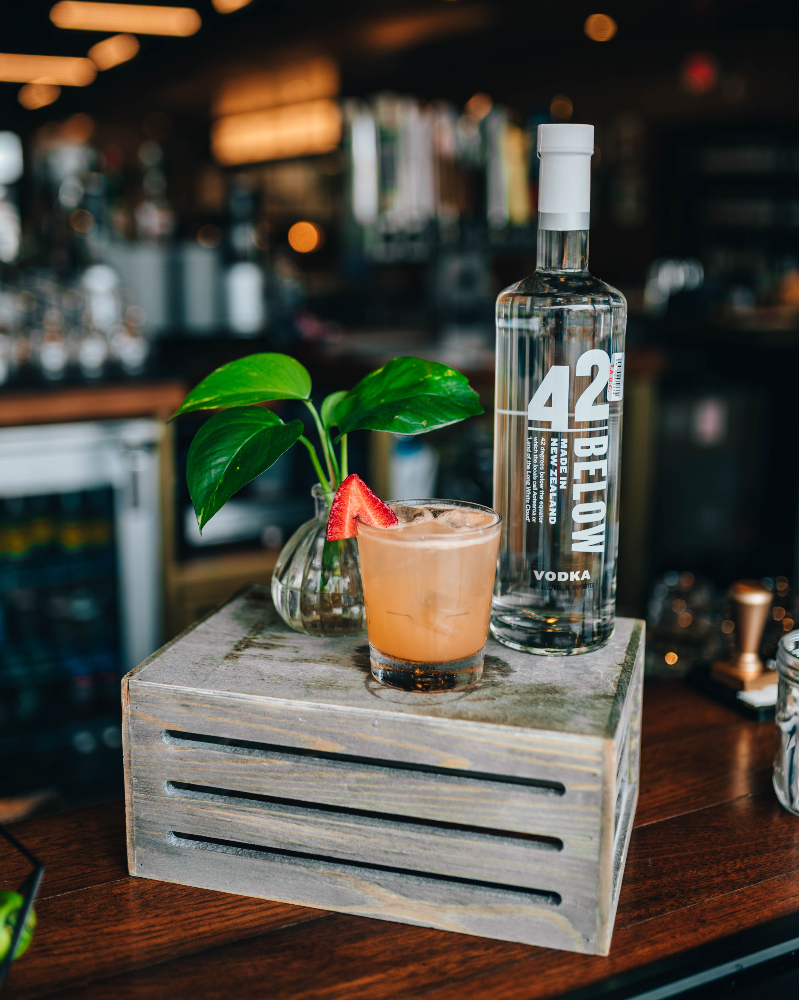

도어텍스는 ‘다목적구조삼각대’로 분류되는 Rock Exotica사의 애리조나 보텍스 멀티포드 세트로 설치하는,
도시형 로프구조시스템 운영에 초점이 맞춰진 일련의 설치형태를 말한다. ‘도시형’ 로프구조라 함은 빌딩 내부의 출입문, 창문, 승강기 입구, 밀폐공간 등 실내에서 수행하는 로프구조 현장이다. 그러한 현장은 대부분 수직공간에서의 추락사고현장일 것이며 따라서 도어텍스 역시 수직구조를 위해 설계된다. 실제로 최초의 도어텍스는 승강기 사고를 안전하고 효율적으로 하기 위해 고안되었다.